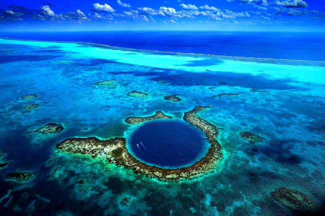
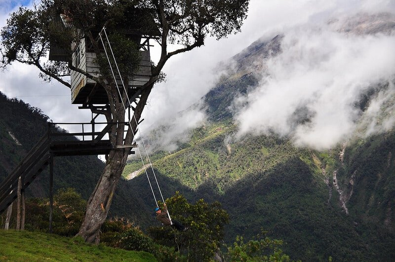
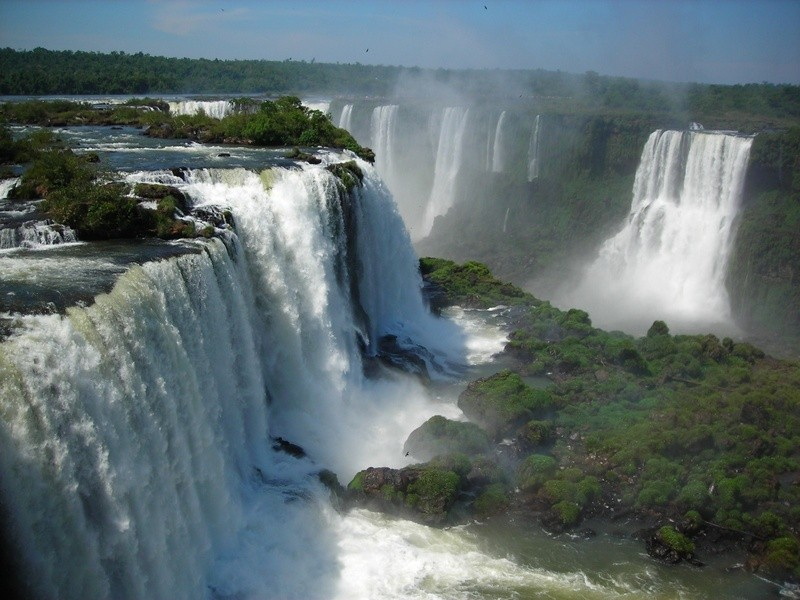
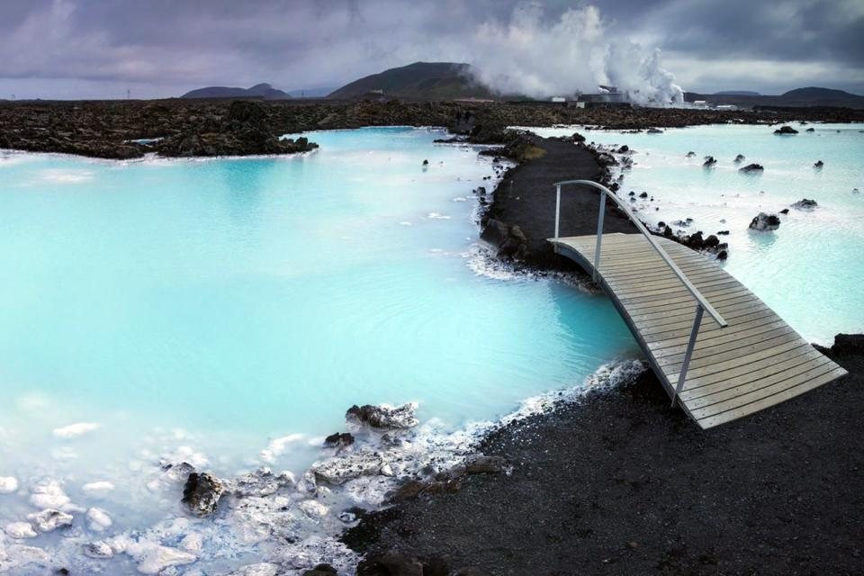
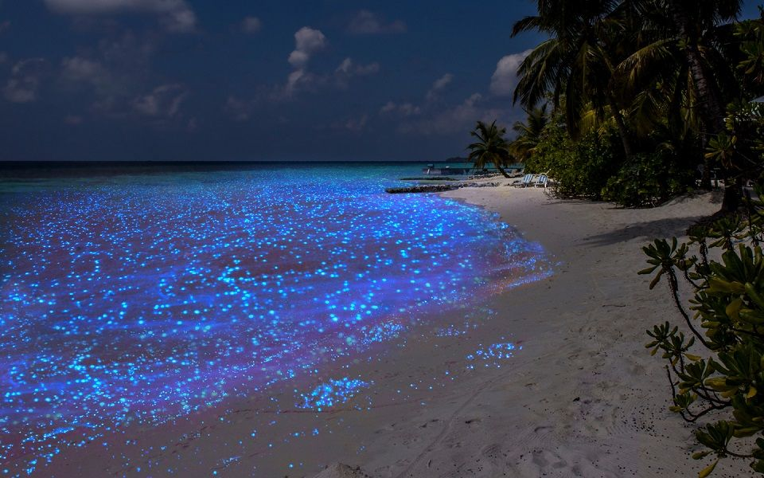
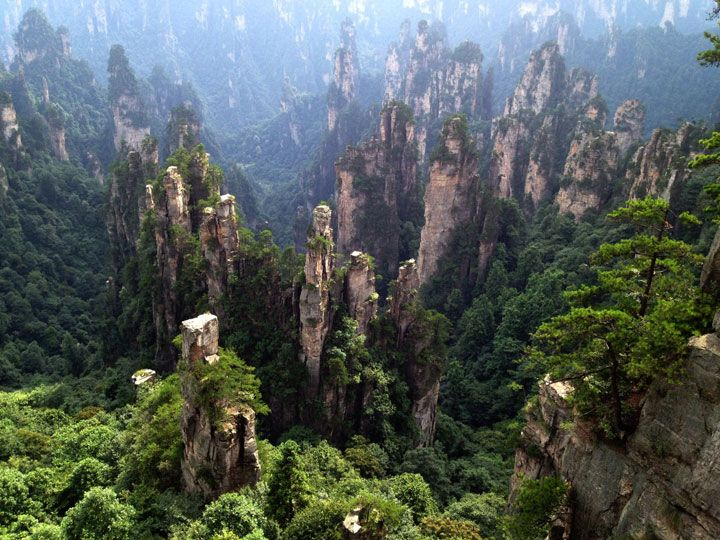
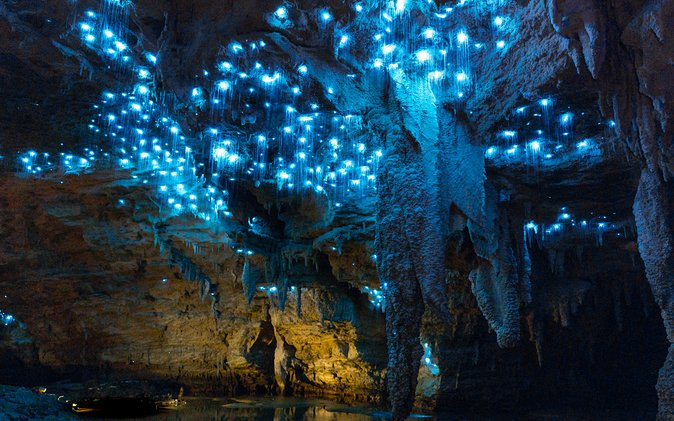

Haiku Stairs
Les escaliers Haʻikū, également connus sous le nom de Stairway to Heaven ou Haʻikū Ladder, est un sentier de randonnée escarpé sur l'île d'Oʻahu, à Hawaï

Piscine naturelle de To Sua
Sur la côte Sud de l’île, dans le village de Lotofaga, se trouve… un grand trou de près de 30 mètres de profondeur et, au fond,
l’une des plus belles piscines naturelles du monde : To Sua Ocean Trench.

Le Grand Trou Bleu
Le grand trou bleu est situé dans les eaux du Belize, en Amérique centrale. Il mesure 300 mètres de diamètre et 120 mètres de profondeur !
Ce trou bleu est situé à 80 kilomètres de Belize City.

Balançoire du Bout du Monde
Située à Baños, une petite ville d’Equateur, la balançoire en question est aisément reconnaissable: en effet, près d’une petite
cabane en bois dans un arbre, une balançoire s’élance depuis une falaise et vient surplomber toute la vallée.

Chutes d'Iguazú
Les chutes d'Iguazú, chutes d'Iguaçu ou encore chutes d'Iguassu, situées au milieu de la forêt tropicale, à la frontière entre l'Argentine et
le Brésil, sont des chutes d'eau constituant un site naturel inscrit au patrimoine mondial par l'UNESCO en 1984.

Le Lagon bleu
Une station thermale située dans le sud-ouest de l'Islande. Ses eaux proviennent de la centrale géothermique de Svartsengi.

La plage bioluminescente
La mer d'étoiles de l'île de Vadhoo aux Maldives, un banc de sable paradisiaque qui scintille et s'illumine de bleu électrique
à la nuit tombée. Ce paysage féerique causé par le phytoplancton des mers semble irréel.

Les pitons rocheux
Une fabuleuse forêt de pierres, comme suspendues entre ciel et terre, au cœur de la province du Hunan. Il aura fallu la persévérance
du peintre chinois Wu Guanzhong pour que soit révélée la magnificence de ces lieux.

Grotte de Waitomo
La grotte aux vers luisants de Waitomo en Nouvelle-Zélande est une grotte illuminée ouverte aux visiteurs. La découverte est féerique
et se fait en barque, dans le silence, les yeux grand ouverts !
